Table of Contents
- HTML Files and Structure
- #header
- #subheader
- #content
- .post
- #comments (post_*.html only)
- #related_posts (post_*.html only)
- #page_footer
- #footer_banner
- CSS Files and Structure
- Javascript
- Sources and Credits
A. HTML Files and Structure
This theme is a single column design with three main sections: header, subheader, and content. All information within each section is nested within stylized div with an appropriate id or class. Additionally, HTML5 tags including header, nav, article, and footer are also included, all of which will be covered later. There are four pages:
- index.html
- archive.html
- contact.html
- post.html
This documentation covers the index.html as an example, however, all other pages contain the same styles. The methods covered can be applied throughout the theme's documents.
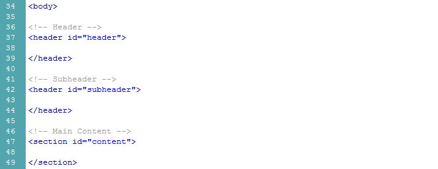
Fig. 01 - Basic markup (remember: this is not what the actual document looks like, it is a simplifed version to accomodate this guide)
The header tags denote a header section of the page, generally including navigation and important information/links to other sections of the site. The section tag denotes an important section of the site that does not fit the afformentioned tag's description and usage. Now lets get into the details of each specific id style.
#header
The header tag holds the logo, main navigation, and search bar.
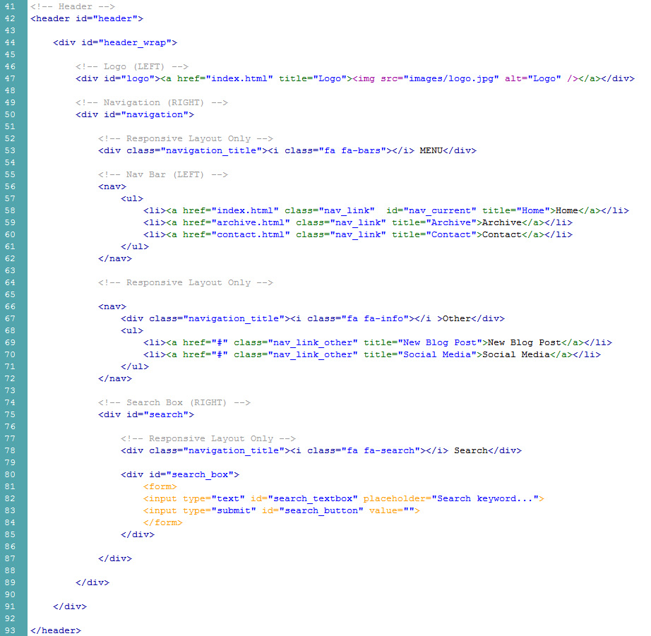
Fig. 02 - Header markup
In order to change the logo of your website, change the link to the image respective to your root folder. Ours is placed in the images folder and it's called logo.jpg. It is recommended you place your images in the same folder. If your logo was named oranges.jpg and you placed it into the images folder, the link would be images/oranges.jpg. Additionally, when the logo is clicked, it will redirect the user to index.html and can be replaced with whatever page you desire by changing href="link-to-page-here.html" with respect to the root folder.
Next, is navigation. Within the navigation id, we have the navigation and search bar within their respective div tags. Furthermore, there are additional links that will only appear when the user views the responsive website, marked with the <! -- Responsive Layout Only --> comment. To edit the navigation bar, change the link (similar to changing the link for the logo) to the page, the title name, and the displayed name of the link. That's it for the #header portion of the markup.
#subheader
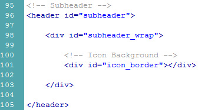
Fig. 03 - Subheader markup
The icon_border provides the border surrounding the icon avatar. Nothing to see here, folks!
#content
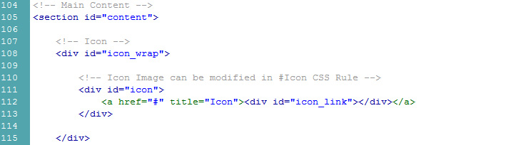
Fig. 04 - Icon
The icon link must be changed in a similar fashion to all links referenced above. The image itself must be changed via CSS. Skip to the CSS section.
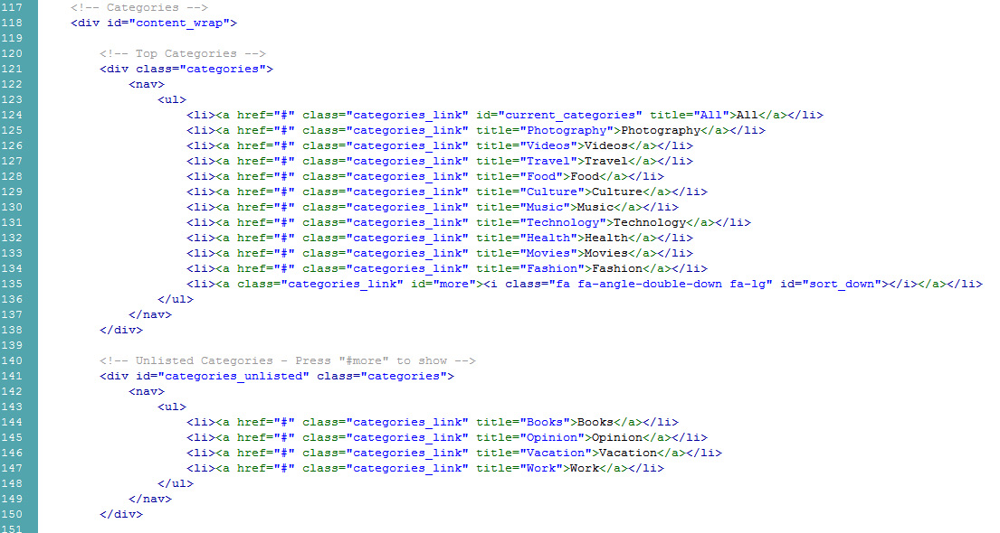
Fig. 05 - Categories
The categories class links can be changed just like the main navigation links in the #header section of this documentation. The categories_unlisted id will show when the right arrow next to the category buttons is pressed. It will toggle an extra list of categories that are not shown previously due to space requirements. Just edit the categories_unlisted list like the one above, changing the links, title, and displaed name.
The next section of this documentation will primarily focus on the mark up for the variety of posts. Keep in mind that it is still within the #content section tag.
.post
The markup for the posts use the article tag and post class. The nested divs differ based on each post type, so keep this in mind when editing. Each post contains a header (including a title and date), body (for the post content), and footer (featuring read more buttons, icons for user interaction, and social media).
This documentation page will now cover each individual post type, what makes them different, and how they can be edited.
Standard Post with Image Feature
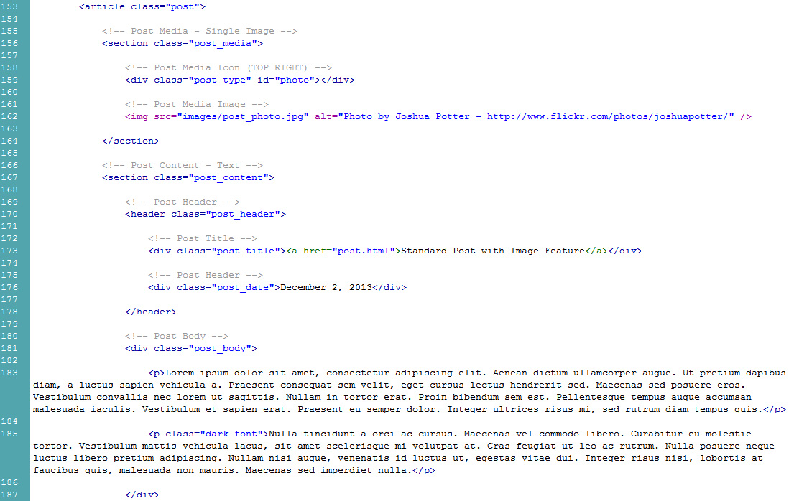
Fig. 06 - Standard Post with Image Feature, pt. 1
The image is nested in the section tag with post_media class. The post_type id is photo. This changes the icon in the top right of the media on the post. Other options include photoset and video (both covered later). To change the image, replace the source of the image (in this example: src="images/post_photo.jpg") with a link to a local file on the server or a image hosted on another website. The image will be resized automatically according to this theme's width restrictions. Also, don't forget to change the alt tag, text that will replace the image if users have images turned off or cannot see and utilize applications that read what is on their screen to them!
The post_title div holds the title of the post with a link around it. Point the link to the page of the post. The post_date div holds the date of the post. The post_body class holds the content of the post. These three divs are standard on all posts types. You can style post_body text differently with .dark_font, .quote, and .highlight (all of which are demonstrated on post.html).
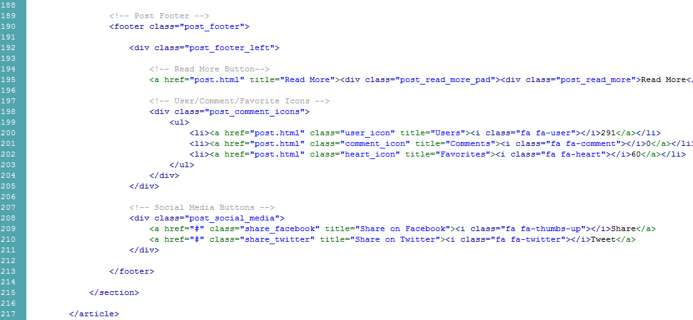
Fig. 07 - Standard Post with Image Feature, pt. 2
The footer tag contains the read more button, social media icons, and social media "share"/"tweet" buttons.
Standard Post with Gallery Feature
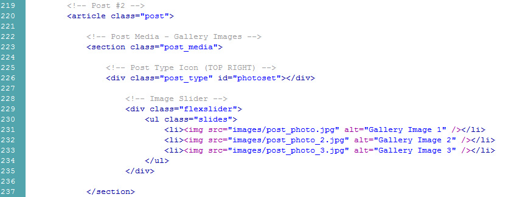
Fig. 08 - Standard Post with Gallery Feature
The standard post with gallery feature is no different to any other media post except for post_type (with an id of photoset) and the flexslider div. To change the images in the image slider, change the links to the images with respect to the root folder. Don't forget to change the alt tags!
Standard Post with Video Feature
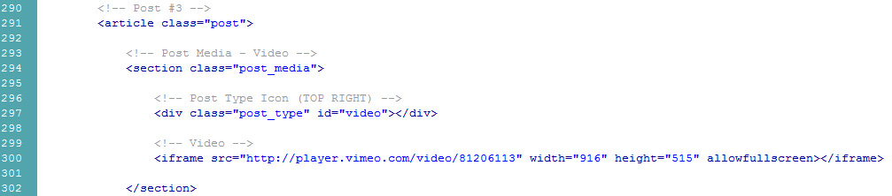
Fig. 09 - Standard Post with Video Feature
The standard post with video feature is similar to the other media posts above. Simply change the post_type id to video and replace the iframe with another embed link or local video player with the dimensions 916x515 (px).
Standard Post
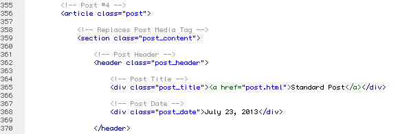
Fig. 10 - Standard Post
The standard post template features no post_media class. The only thing that requires editing is post_title, post_date, and post_body, similar to all other posts.
#comments
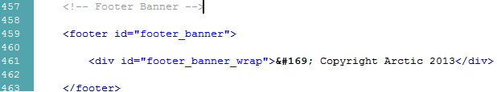
Fig. 12 - Footer Banner
The #footer_banner id holds copyright information.
Fig. 12 - Footer Banner
The #footer_banner id holds copyright information.
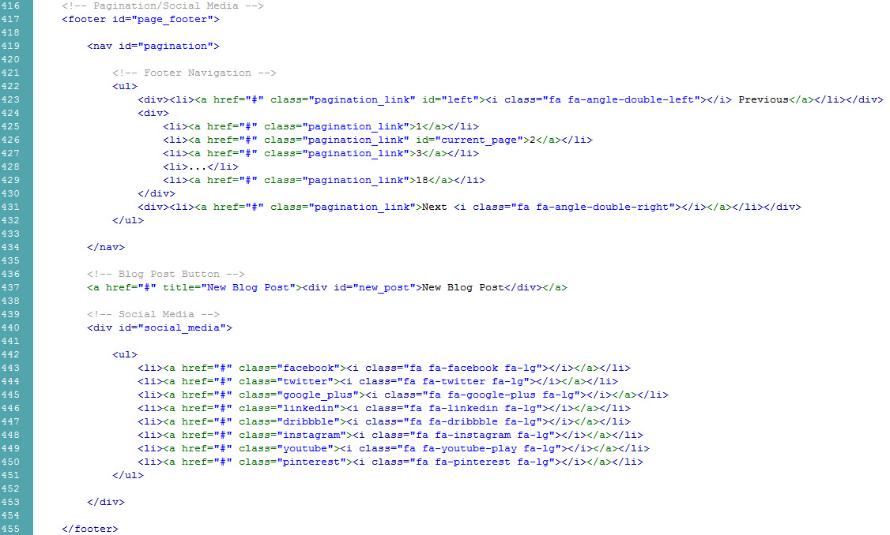
Fig. 11 - Footer Pagination and Social Media
The footer tag with page_footer id holds footer navigation and social media. The navigation can be edited just like previous links. The social_media id contains an ordered list that includes a link and an icon. The link can be changed as explained above. The icon is parsed based on the code within the quotations for the class value in accordance to Font Awesome. In order to change the icon, replace fa-icon-name (ex. fa-facebook) with whatever other social media icon you desire provided it is on this list. Make sure to leave the preceding fa in place, as it lets the browser know that it's looking for an icon from the Font Awesome stylesheet. fa-lg is for sizing. To make it smaller, remove it entirely, to make it larger, replace with fa-2x, fa-3x, fa-4x, or fa-5x.
Keep in mind that the footer is inside the #content section.
Fig. 12 - Footer Banner
The #footer_banner id holds copyright information.
That covers the the HTML Files & Structure section. All other pages are constructed using the same styles as above.
B. CSS Files and Structure
All styles discussed above are defined in the main_stylesheet.css located within the css folder. This next section of the documentation will cover the styles relevant to the above html, what can be changed, and how it can be changed. Please remember that if you still have questions, feel free to contact us.
There are two stylesheets included with this theme:
- css/main_stylesheet.css
- css/responsive_stylesheet.css
- css/flexslider.css
The main_stylesheet.css and responsive_stylesheet.css contain all styles regarding the design of the theme. flexslider.css contains the style for the image slider. In order to edit any of the associated styles, locate the style (id is represented with a #, class represented by a .) in the stylesheet and edit any of it's values. The main_stylesheet.css and responsive_stylesheet.css are labeled by the section of the document it is located in comments:
/* 0.0 Document Restrictions */
Code...
/* 1.0 Header */
Code...
/* 2.0 Subheader */
Code...
/* 3.0 Icon/Avatar */
Code...
/* 4.0 Categories */
Code...
/* 5.0 Posts */
Code...
/* 6.0 Permalink Styles */
Code...
/* 7.0 Comments */
Code...
/* 8.0 Related Posts */
Code...
/* 9.0 Pagination */
Code...
/* 10.0 Styling */
Code...
Important Changes
Two images that must be changed via CSS that directly impacts the design are the icon and the post_gallery.html, post_image.html, post_standard.html, post_video.html backgrounds.
Icon
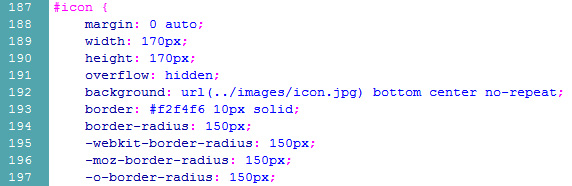
Fig. 01 - Icon CSS
To change the icon image, replace background url (../images/icon.jpg) with the link to the icon you wish to use instead. The link to the icon is in relation to the main_stylesheet.css. Do not worry if the image is square, the css will do the rest to make it circular!
Post.html Background
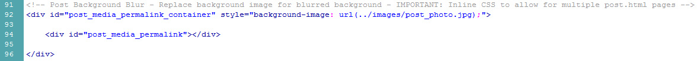
Fig. 02 - Post.html Background CSS
To change the icon image, replace background url (../images/post_photo.jpg) within inline css with the link to the icon you wish to use instead. The link to the icon is in relation to the index.html. As the script blurs the background image of the container, inline CSS is necessary to allow for independent background images on each page, instead of using one background image for all pages similar to post_gallery.html, post_image.html, post_standard.html, post_video.html in one stylesheet. Do not worry if the image is not blurred, the Javascript (covered later in this guide) will do the rest to make it blurred! This is only in the post_gallery.html, post_image.html, post_standard.html, post_video.html pages.
Retina Display
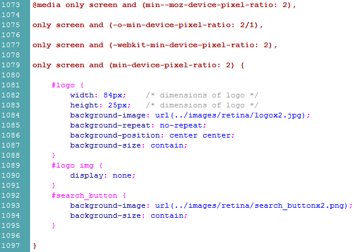
Fig. 03 - Retina Display
Retina Display is defined within main_stylesheet.css right at the end. The only images that may need changing are the logo. Replace the source of the logo image and replace the dimensions with the dimensions of your own logo.
C. Javascript
This theme supports four Javascript files:
- jQuery
- js/jquery.flexslider-min.js
- js/blur.min.js
- js/custom.js
jQuery
jQuery is a library that allows the developer to write much less code than Javascript normally permits. The library is hosted remotely and is not included in the js/ folder
jquery.flexslider-min.js
This document contains the necessary code for the imageslider (supported by jQuery), titled FlexSlider, to operate. FlexSlider is owned by WooThemes and licensed under the GPLv2 license.
blur.min.js
This document contains the necessary code for the blurred background show on post.html (supported by jQuery). It does NOT work locally - it must be viewed on a remote server! To edit the background image, please review the CSS portion of this documentation. Blur.JS is owned by Jacob Kelley and is licensed under the MIT license.
custom.js
This document contains the necessary code for the rest of the site (supported by jQuery)! It allows for smooth slide toggle buttons featured on the categories "more" button, found on index.html, and accordian folders, found on archives.html.
D. Sources and Credits
- jQuery - http://jquery.com/
- FlexSlider - http://www.woothemes.com/flexslider/
- Blur.JS - http://blurjs.com/
- Font Awesome - http://fontawesome.io/
- Google Fonts - http://google.com/webfonts/
Once again, thank you so much for purchasing our theme. If you have any remaining questions, feel free to contact us in the comments section on the product page for "Arctic - Personal Blog Theme".
Joshua Potter & Lucas Kriebel - Appearly Themes